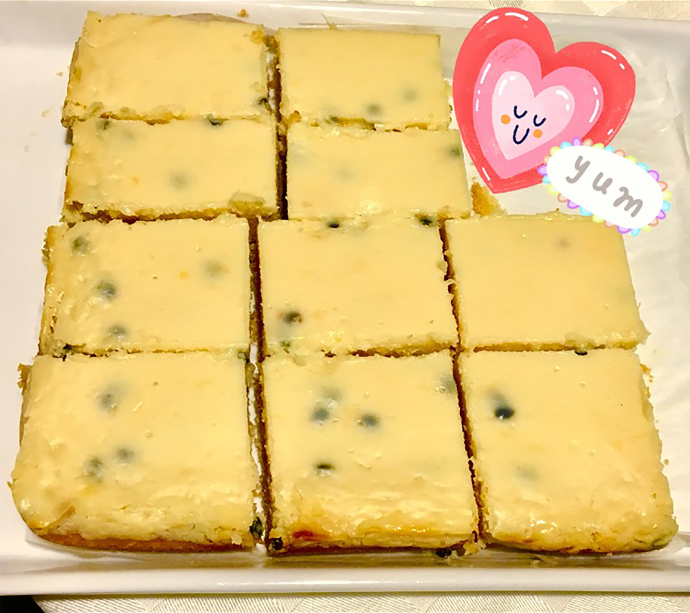

ingredients:
Base of Passion Fruit Slice
1 cup of self-raising flour
1 cup of desiccated coconut
125g butter, melted
1/2 cup caster sugar
Top of Passion Fruit Slice
1 x 395g can sweetened condensed milk
1/2 cup of lemon juice
5 tbsp passionfruit pulp (3 or 4 passionfruits should do)